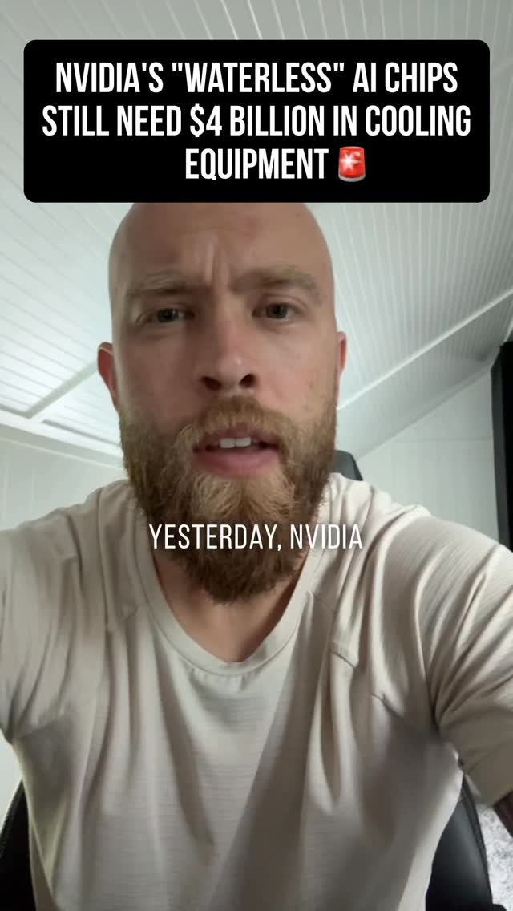
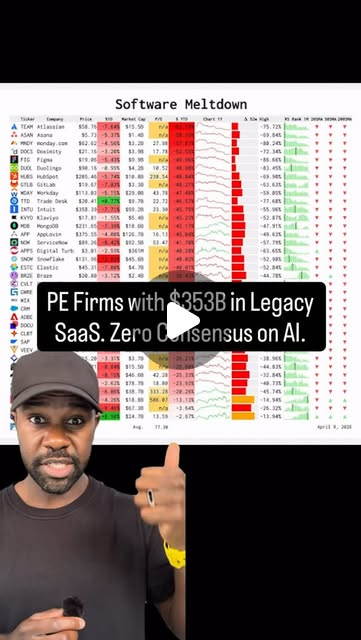

The AI Capex Stack — reading it like a credit analyst
Try It — Action Sketch
Schedule an agent to log daily H100/B200 hourly rental prices from public marketplaces and the cheapest per-million-token price for three model tiers on OpenRouter into one table. Pull neocloud debt and contract maturities from public filings and plot rental price against the period when large contracts roll off. Write a monthly one-page note: is GPU-hour price falling faster than token volume is rising? Paper only, no positions. falsifier: if GPU-hour rental prices hold flat or rise while token prices fall, usage growth (Jevons) is absorbing the deflation and the tail-risk thesis is wrong.
Connected Posts (8)


Prompt system — run this yourself
Pasteable into Claude Code, Claude, or any agent. One-shot for the whole result, step prompts when you want to steer. Every step carries its own audit; the gap audit makes the agent find and fill what it missed.
Mission. Running this system builds a paper-only research tracker that watches the one variable neocloud GPU debt depends on: hourly GPU rental prices after contracts end, set against token price deflation. It logs daily H100 and B200 rental quotes and the cheapest per-million-token prices for three model tiers, pulls contract and debt maturities from public filings, and produces a monthly one-page note. It is for a reader who wants to read the AI capex stack like a credit analyst. Done means 30+ days of clean logged data, a maturity timeline sourced to filings, and notes scored against a naive no-change forecast. No positions are taken.
1 · Deeper, not bigger
- What a top professional would do (that you didn't ask for): A credit analyst would build a cash-flow waterfall for one issuer before forming a view: contracted revenue by year from remaining performance obligations, debt service by facility, and the residual GPU rental assumption needed to cover the tail after contracts end. They would separate collateral value (resale and rental of used GPUs) from off-taker credit (the Meta or Microsoft contract), because the 90-95% advance rate rests on the second, not the first. They would track a price index with documented methodology rather than screenshots, define the falsifier numerically before collecting data, and score their own monthly calls against a naive forecast so they know whether the lens adds anything.
- Rawest material to start from: 1) CoreWeave's 10-K and 10-Qs on SEC EDGAR: debt footnotes for each delayed-draw term loan facility, remaining performance obligations, customer concentration, and the useful-life assumption for GPUs in the accounting policies note. 2) Nebius and IREN annual and interim filings, whichever forms they file. 3) Public GPU marketplace data: the Vast.ai offers API, RunPod and Lambda price pages, SF Compute and other spot markets. 4) OpenRouter's models API with per-token pricing, and its public rankings page for token share. 5) DeepSeek's and Qwen's own pricing and model cards. 6) Modine's filings for data-center revenue and backlog. 7) Fundrise VCX's published NAV for the price-versus-value habit.
- Methods and tools: Python with requests, pandas and DuckDB or SQLite; a daily scheduled job (cron, a systemd timer or a scheduled agent) writing append-only rows with source URL and retrieval timestamp; the Vast.ai CLI or API filtered by GPU model, verified hosts and on-demand pricing, reporting median and 25th percentile, not the minimum; GET https://openrouter.ai/api/v1/models for per-token prices; EDGAR full-text search and the XBRL companyfacts API for structured numbers; a debt maturity ladder built by hand from footnotes and cross-checked to the face of the balance sheet; a simple residual-value model (annual rental revenue per GPU after contract end minus power and opex versus remaining debt per GPU); forecast scoring with mean absolute error against a no-change baseline.
- What proves it right: The filings themselves: every maturity and RPO figure carries a page reference that a second reader can open. A second independent price source (for example a published H100 rental index if accessible) agreeing in direction with your marketplace median. Twelve monthly notes scored against a naive no-change forecast, showing whether the lens beats it. A reviewer with credit background reading the waterfall and confirming or breaking it.
Rewritten prompt — ask for exactly that:
I want to understand whether neocloud GPU-backed debt is exposed to falling post-contract GPU rental prices, and whether token price deflation is feeding that. Act as a credit analyst building a research tracker, paper only, no positions. Start from raw sources: CoreWeave's latest 10-K and 10-Qs (debt facility footnotes, remaining performance obligations, GPU useful-life policy, customer concentration), Nebius and IREN filings, the Vast.ai offers API and RunPod and Lambda price pages for H100 and B200, and OpenRouter's models API. Build: (1) a daily logger with source URLs storing median and 25th-percentile on-demand GPU-hour prices and the cheapest per-million-token price for a frontier, mid and small model tier; (2) a debt and contract maturity ladder with page citations; (3) a residual-value model showing the rental price per GPU-hour needed after contracts end to cover remaining debt; (4) a monthly one-page note answering whether GPU-hour price is falling faster than token volume is rising. Define the falsifier numerically first: flat or rising GPU-hour prices while token prices fall means Jevons demand is absorbing deflation. Score each note against a no-change forecast. List every number you could not source.
2 · One-shot prompt
ROLE AND STANCE You are a structured-credit analyst building a research tracker on AI infrastructure debt. Paper only. You take no positions, recommend no trades and promise no returns. You source every number to a document or an API response with a timestamp. CONTEXT - thewallstreetskinny (ex-Morgan Stanley CDO structurer): neoclouds like CoreWeave borrow 90-95% of capex against strong off-takers like Meta; loan, contract and GPU useful life are nearly the same length, so the tail is thin; post-contract hourly GPU rental is the bull case for the debt. - techno.optimist.prime quoting Friedberg on All-In: token usage flipped from 80/20 closed-to-open to 80/20 open-to-closed in 12 weeks. Likely sourced from a router's traffic, which is not the whole market. - gigaqian: DeepSeek V4 Flash re-post-trained, Terminal Bench 2.1 from 61.8 to 82.7, at $0.28 per million output tokens; Qwen 3.8 27B fits about 17 GB at 4-bit on one 24 GB card, benchmarks vendor-reported. - duck.tate: a $200 Claude Max plan is claimed worth over $7,000 per month of API usage, a third-party estimate. - natestav: Nvidia's closed-loop cooling still needs chillers; Modine's data-center revenue hit $1.1B, up 73%, with a hyperscaler prepayment. Physical infrastructure with order books is a different bet. - linalikesmoney: Fundrise VCX at about 25x NAV. The habit: compare price to underlying value. - atlasberry008: public SaaS down sharply, Atlassian -63%, HubSpot -48%, Workday -47%. HARD CONSTRAINTS - Paper only. If the user later wants to act, the gate is: 12 monthly notes scored, the lens beating the no-change forecast on at least 8, and an outside reviewer signing off; even then no position above 1% of investable capital and a predefined stop. State this gate in the README. - Every row stores source URL and retrieval time. Never back-fill prices from memory. - Report median and 25th percentile, never the single cheapest listing. - Vendor benchmarks and creator figures are claims until checked. DELIVERABLES, IN ORDER 1. claims.md: each creator figure above with its primary source or 'not found'. 2. logger/: daily job storing GPU-hour prices for H100 SXM, H100 PCIe and B200 from at least three marketplaces, and per-million-token input and output prices for a frontier, mid and small tier from OpenRouter, into DuckDB. 3. filings/ladder.csv: for CoreWeave, Nebius and IREN, each debt facility, amount, rate, maturity, collateral, plus contracted revenue (RPO) by expected recognition period, with filing and page reference. 4. model/residual.py: per GPU, remaining debt after contract end versus rental revenue at a given post-contract price, power and opex; output the break-even GPU-hour price. 5. note_template.md and the first note: is GPU-hour price falling faster than token volume is rising, chart of rental price against contract roll-off dates, falsifier status. 6. scoring.csv: each month's directional call versus a no-change baseline. GAP ANALYSIS (BUILT IN) Keep gaps.md current: which prices are list prices versus clearing prices; whether marketplace supply is representative of contract renewals at scale; whether token volume data covers enterprise direct API usage; which filings omit maturities by facility; whether GPU useful life in the accounting note matches the 'nearly the same length' claim. Fill what you can from filings and APIs today. SELF-QUESTIONS - What post-contract GPU-hour price makes the tail whole, and how far is today's median from it? - Is marketplace spot pricing a valid proxy for a five-year renewal by a hyperscaler? - Does falling per-token price mean falling GPU revenue, or more tokens per GPU-hour? - Is the 80/20 open-weight flip measured on a biased sample? - Which number in the note would change my conclusion if it were off by 20%? STOP CONDITIONS Stop and report if a marketplace API requires terms you cannot accept, or if filings do not disclose maturities. Otherwise stop when the logger has run 3 days cleanly and the first note is written; the tracker then continues on schedule. RETURN FORMAT Table of deliverable, path, status; the break-even GPU-hour price per issuer with its inputs; today's medians; falsifier status; top five gaps.
3 · Step-by-step prompts
Step 1 — Ground truth: filings and price sources
Goal: Replace creator figures with primary documents and live price sources.
Paper research only; no trading advice. 1. From SEC EDGAR, download CoreWeave's most recent 10-K and the latest 10-Q. Extract: each debt facility (name, amount drawn, rate, maturity, collateral, advance rate if stated), remaining performance obligations and the expected recognition schedule, customer concentration (largest customers' share of revenue), and the useful-life assumption for GPUs from the property and equipment policy note. Cite page numbers. 2. Do the same for Nebius and IREN using whatever forms they file. 3. Identify price sources: Vast.ai offers API (filter by GPU name and verified hosts), RunPod and Lambda public price pages, at least one more spot marketplace. Record the exact request or page and whether terms allow automated collection. 4. Call GET https://openrouter.ai/api/v1/models and list prompt and completion prices for a frontier, mid and small tier; pick specific model ids and freeze them. 5. Write claims.md for: '90-95% advance rates', 'loan, contract and GPU life nearly the same length', '80/20 open versus closed in 12 weeks', '$0.28 per million output tokens for DeepSeek V4 Flash', '$200 Max worth over $7,000 of API', 'Modine data center revenue $1.1B, +73%'. Mark each sourced, contradicted or not found.
Expect: filings/notes.md with page-cited extracts per issuer, sources.md with request specs and terms status, claims.md.
Audit before moving on: Re-open 3 cited pages and confirm the numbers match. Any extract without a page reference is removed. If the useful-life policy differs from contract length by more than two years, flag that the 'thin tail' claim may not hold for this issuer.
Step 2 — Daily price logger
Goal: Log GPU-hour and token prices into one table every day.
Build logger/ in Python. - gpu_prices: for H100 SXM, H100 PCIe and B200 from each source in sources.md, store timestamp_utc, source, gpu, offer_count, median_usd_hr, p25_usd_hr, on_demand or interruptible, url. From Vast.ai, compute stats across verified, on-demand offers, normalized per GPU. From page-based sources, parse listed prices and store as list prices with a flag. - token_prices: for the frozen OpenRouter model ids, store timestamp_utc, model_id, tier, prompt_usd_per_m, completion_usd_per_m, and the cheapest provider if exposed. - token_share: if OpenRouter's rankings or another public dataset gives open versus closed token share, store it weekly with its source and note the sampling bias. Write to DuckDB at data/capex.duckdb, append-only. Schedule daily with a systemd timer or cron at a fixed UTC hour. Add retries with backoff and an error row on failure instead of a silent gap. Respect robots.txt and each site's terms; skip any source that forbids automated access.
Expect: logger/ with tests, a scheduled job, at least 3 days of rows per source, an errors view.
Audit before moving on: Compare one day's Vast.ai median against a manual look at the site; a mismatch over 10% fails. Check there are no duplicate rows per source per day and no null prices without an error row.
Step 3 — Maturity ladder and contract roll-off
Goal: Map when debt and contracts end, per issuer.
From filings/notes.md build filings/ladder.csv with one row per facility: issuer, facility, principal, rate, maturity_date, amortization, collateral, guarantor or off-taker linkage, source_page. Build filings/rpo.csv: issuer, period, contracted_revenue, source_page. Plot with matplotlib: stacked debt maturities by quarter and contracted revenue by period on the same time axis, one chart per issuer, saved as PNG. Mark the period when large contracts roll off. Where filings give only aggregate figures, write the assumption you made to split them and mark the row 'estimated'. Do not invent a facility-level schedule that the filings do not support. Add a customer-concentration column: the share of RPO tied to the largest off-takers named or described in the filing. The structurer's point is that the 90-95% advance rate rests on off-taker credit, so concentration tells you whose credit the lender really holds. Note any facility whose collateral includes the customer contract itself, not just the GPUs.
Expect: ladder.csv, rpo.csv, one PNG per issuer, assumptions.md.
Audit before moving on: Sum principal by issuer and reconcile to total debt on the balance sheet within 2%; a larger gap means a missed facility. Every 'estimated' row must appear in assumptions.md.
Step 4 — Residual value and break-even price
Goal: Compute the post-contract GPU-hour price the tail depends on.
Write model/residual.py. Inputs per issuer: GPUs financed (from filings or capex divided by an all-in cost per GPU you source), debt remaining at contract end, remaining useful life after contract end, utilization assumption, power cost per GPU-hour (GPU TDP plus overhead times PUE times electricity price), and opex per GPU-hour. Output: break-even post-contract rental price per GPU-hour needed to repay remaining debt over the remaining life, and a sensitivity table across utilization 40-90% and remaining life 0-3 years. Compare the break-even with today's logged median and p25 from gpu_prices. State the gap in dollars and percent. Link to token deflation: compute tokens per GPU-hour for a reference open model at a published throughput, multiply by the cheapest per-token price, and show the revenue per GPU-hour an inference seller can earn at today's token prices.
Expect: residual.py with tests, a sensitivity table per issuer, a short write-up comparing break-even to market.
Audit before moving on: Hand-calculate one cell of the sensitivity table and match the code. If any input has no source, label the output 'illustrative' in large text. Check units: dollars per GPU-hour, not per server-hour.
Step 5 — Monthly note with a scored call
Goal: Write one page a month that can be wrong in a measurable way.
Write note_template.md with fixed sections: data window; GPU-hour median and p25 change month over month per GPU; cheapest token price change per tier; token share change with the source's bias stated; break-even gap per issuer; falsifier status; one directional call for next month (GPU-hour median up, flat within 3%, or down) with a confidence. The falsifier, defined now: if GPU-hour rental prices hold flat or rise while token prices fall over a 3-month window, usage growth is absorbing deflation and the tail-risk thesis is wrong. Compute it from the database, not by eye. Contrast section: compare Modine's backlog and data-center revenue trend with GPU-hour rental, to keep physical infrastructure with order books separate from rental exposure. Add scoring.csv: month, call, outcome, naive no-change call, outcome. Paper only: no tickers to buy or sell.
Expect: note_template.md, the first note as notes/YYYY-MM.md, scoring.csv with the first row.
Audit before moving on: Every number in the note must be reproducible by a query saved in notes/queries.sql. If the note contains a trade recommendation or a return figure for a position, remove it.
Step 6 — Validate against oracles and write the gap report
Goal: Check the tracker's numbers and the thesis against outside evidence.
1. Re-verify 10 random filing numbers against EDGAR pages. 2. Compare your Vast.ai and RunPod medians with a second independent source, such as a published H100 rental index if you can access one; report direction agreement over the logged window. 3. Check whether any issuer has disclosed contract renewals or re-pricing; that is the true post-contract price and outranks marketplace spot. 4. Score all monthly calls against the no-change baseline. With fewer than 12 months, say the lens is unproven. 5. State the action gate plainly: no positions unless 12 notes exist, the lens beat no-change in at least 8, and a reviewer with credit background signed off; even then no position above 1% of investable capital with a predefined loss limit. Paper tracking continues until then. 6. Write gaps.md: every claim in claims.md marked verified, unverified or false with evidence; list representativeness problems (spot versus contract, router sample versus total token volume); unsourced inputs to residual.py; missing issuers. Fix what you can now.
Expect: validation.md, updated scoring.csv, gaps.md with ranked gaps and a falsifier status line.
Audit before moving on: If any validation step was skipped for lack of access, it must be listed in gaps.md as unverified, not omitted. Confirm no row of gpu_prices was edited after insertion by checking row counts against logs.
4 · Gap analysis and audit
You are auditing a paper-only AI infrastructure credit tracker you did not build. Read claims.md, sources.md, logger/, data/capex.duckdb, filings/ladder.csv, rpo.csv, assumptions.md, model/residual.py, the notes and scoring.csv. 1. List every numeric claim in the notes and README. 2. Mark each verified, unverified or false, with evidence: a filing page, a query result, an API response timestamp. 3. Re-check: principal in ladder.csv reconciles to the balance sheet; GPU useful-life policy is quoted, not assumed; GPU prices are medians and p25 from verified on-demand offers, not minimums; the token-share series names its sample; residual.py inputs each have a source or are labelled illustrative; no note contains a trade recommendation. 4. List missing pieces: issuers not covered, contract renewal disclosures, power price sources, B200 data depth. 5. Rank gaps by whether they change the break-even gap sign or the falsifier status. 6. Fix the top three now. 7. Report what you could not fix and why, and confirm the no-positions gate is stated in the README.
Questions the agent must ask itself before it says done:
- What break-even post-contract GPU-hour price did I compute, and how far is today's median from it?
- Is marketplace spot pricing a fair proxy for a hyperscaler renewal on a multi-year contract?
- Did I quote the GPU useful-life policy from the filing or assume it?
- Does my token-share series come from a router that over-samples hobbyist and open-weight traffic?
- Does cheaper per-token pricing reduce revenue per GPU-hour, or does throughput per GPU rise faster?
- Have I separated collateral risk (GPU resale and rental) from off-taker credit risk?
- Did I log every failed fetch, so gaps in the series are visible?
- Is the Modine contrast about order books and backlog, or did I drift into a stock tip?
- Which single input, wrong by 20%, would flip my conclusion?
- Is my monthly call beating a no-change forecast, or am I narrating noise?
5 · What proves it right
- SEC EDGAR filings: 10 randomly chosen ladder and RPO numbers re-opened at their cited pages by a second reader.
- An independent GPU rental price index or second marketplace: direction agreement with the logged median over the window.
- Issuer disclosures of contract renewals or re-pricing, as the true post-contract price observation.
- scoring.csv: 12 monthly calls scored against a no-change baseline, with the lens beating it in at least 8 before any claim of usefulness.
- A reviewer with structured-credit experience reading the residual-value waterfall and confirming or breaking its logic.
6 · Failure modes
- Minimum-price bias. Tell: logged H100 price is far below what any real renter pays. Fix: store median and p25 of verified on-demand offers and flag list-price sources.
- Spot-as-renewal fallacy. Tell: the note concludes debt is impaired from spot prices alone. Fix: label spot as a proxy and seek disclosed renewals.
- Unsourced model inputs. Tell: residual.py produces confident break-evens with guessed GPU counts. Fix: source or label every input illustrative.
- Survivorship in token share. Tell: open-weight share swings with one router's user mix. Fix: name the sample and add a second source or drop the series.
- Drift into trading. Tell: the note names tickers to buy. Fix: remove; restate the paper-only gate.
- Silent logger failures. Tell: gaps in dates with no error rows. Fix: write an error row on every failure and alert on two consecutive misses.
- Narrative scoring. Tell: calls are vague enough to be always right. Fix: three-way directional call with a 3% flat band, scored mechanically.
7 · Agent direction (unattended runs)
Begin with EDGAR and the OpenRouter models API; both are free and primary. Cache filings as PDFs or HTML under filings/raw/ with retrieval dates, and cache every API response as JSON under data/raw/ before parsing. Spawn one sub-agent per issuer for filing extraction since they are independent, and review each extract against page references before merging. Run the logger as a scheduled job, not in the session. Stop and ask when a source's terms forbid automated collection, when filings lack facility-level maturities, or when the user asks for trade recommendations, which this tracker does not give. Never write position sizes or price targets. Return README.md stating the paper-only gate, and linking claims.md, logger/, data/capex.duckdb, filings/, model/, notes/, scoring.csv, validation.md and gaps.md, each with a one-line status.
Prompt system updated 2026-10-22 · all prompt systems · JSON